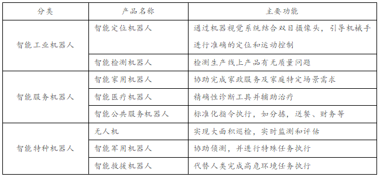
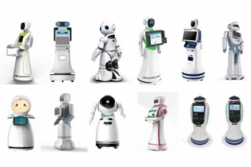
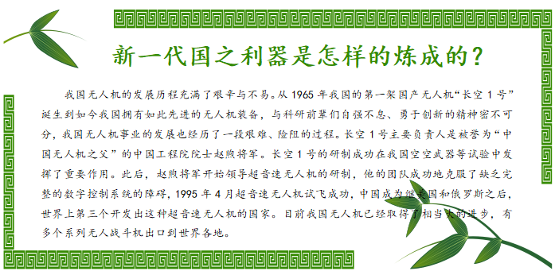

任务二 智能机器人
【任务描述】
2018年横空出世的德勤财务机器人 “小勤人”刷爆了整个朋友圈，国际四大会计师事务所之一的德勤会计师事务所将人工智能技术引入会计、税务、审计等工作中。“小勤人”可以快速“阅读”数千份复杂文件，从中攫取和构建文本信息以更好地作出分析。财务机器人替代了财务流程中的手工操作，特别是高重复的工作，工作效率超过三个全职员工，三个小时就完成一个会计一天的工作量，并且解决了基础操作大量的人力和时间、大大增强了数据的准确性，重点是“小勤人”还是全天24小时上班，并且全年无休！ “小勤人”只是众多智能机器人中的一员，“小勤人”为什么可以这么能干呢？我们要从智能机器人说起。
【任务实施】
2.1智能机器人的定义及分类
智能机器人是指具备不同程度类人智能，可实现“感知-决策-行为-反馈”闭环工作流程，可协助人类生产、服务人类生活，可自动执行工作的各类机器装置，主要包括智能工业机器人、智能服务机器人和智能特种机器人。

2.2智能机器人行业的人工智能核心技术
由于高频人机互动特点，智能机器人的核心技术重点聚焦在智能感知、智能认知和多模态人机交互领域。同时依据应用领域的不同，智能机器人也存在着大量带有典型行业特征的特色关键技术。智能工业机器人运用传感技术和机器视觉技术，具备触觉和简单的视觉系统，更进一步运用人机协作、多模式网络化交互、自主编程等技术增加自适应、自学习功能，引导工业机器人完成定位、检测、识别等更为复杂的工作，替代人工视觉运用于不适合人工作业的危险工作环境或人工视觉难以满足要求的场合；智能家用服务机器人重点应用移动定位技术和智能交互技术，达到服务范围全覆盖及家用陪护的目的；智能医疗服务机器人重点突破介入感知建模、微纳技术和生肌电一体化技术，以达到提升手术精度、加速患者康复的目的；智能公共服务机器人重点运用智能感知认知技术、多模态人机交互技术、机械控制和移动定位技术等，实现应用场景的标准化功能的呈现和完成；智能特种机器人运用仿生材料结构、复杂环境动力学控制、微纳系统等前沿技术，替代人类完成高危环境和特种工况作业。

2.3智能机器人行业的典型企业
智能工业机器人领域，国际四大巨头仍占据较高市场份额，日本发那科和安川、德国库卡、瑞士ABB、意大利柯马侧重具有分拣和装配能力的智能工业机器人，英国Meta、德国Scansonic、日本安川聚焦激光视觉焊缝跟踪系统。国内智能工业机器人是“三巨头”新松、云南昆船和北京机科，新松重点提供自动化装配与检测生产线、物流与仓储自动化成套设备，云南昆船侧重烟草行业服务，北京机科主要应用于印钞造币、轮胎及军工领域。智能服务机器人领域，美国iRobot、中国科沃斯、美国IntuitiveSurgica、以色列Rewalk、荷兰Hot-Cheers分别聚焦于清洁、手术、康复及分拣等细分领域。智能特种机器人领域，波士顿动力围绕着拥有液压驱动核心技术的“大狗”机器人，不断构筑技术壁垒；大疆在国内消费级无人机领域占有率达75%，成为估值超百亿美元的“独角兽”企业；美国Howeand Howe Techonologies则专注生产消防机器人，应用于应急救援场景。
【任务拓展】
未来，大量重复可标准化流程化的工作将完全被更精准、快速的人工智能机器人所取代，你的专业安全吗？
